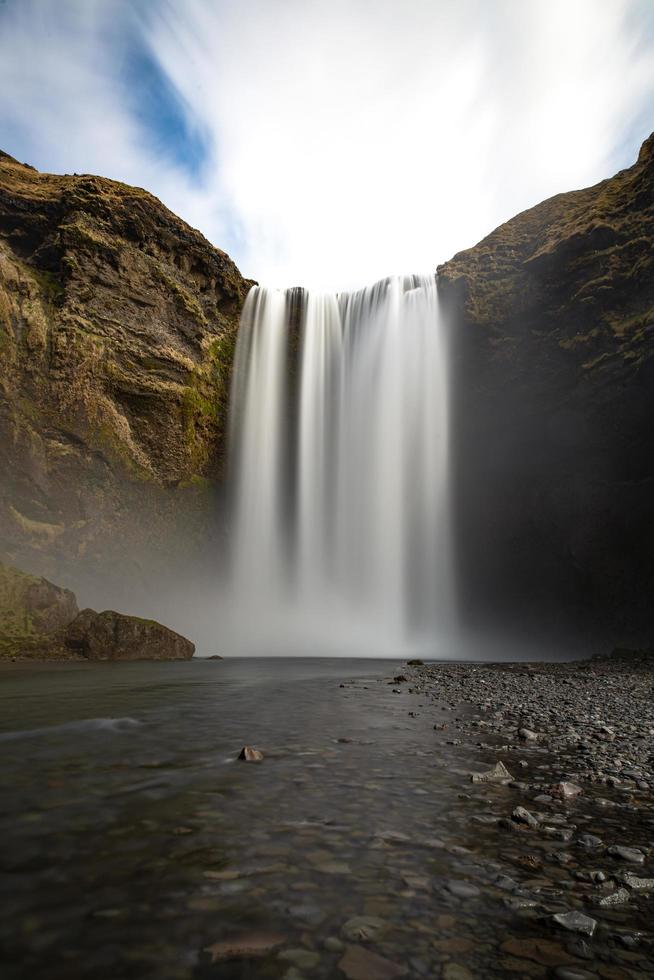
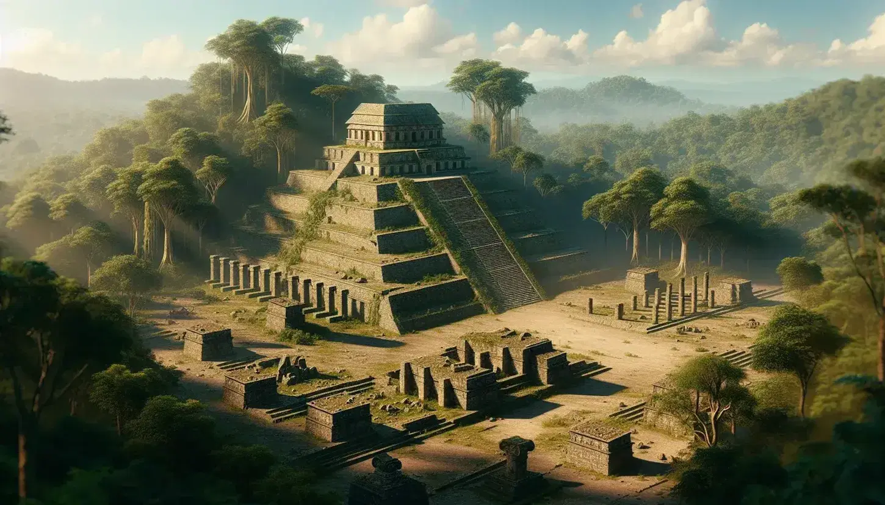
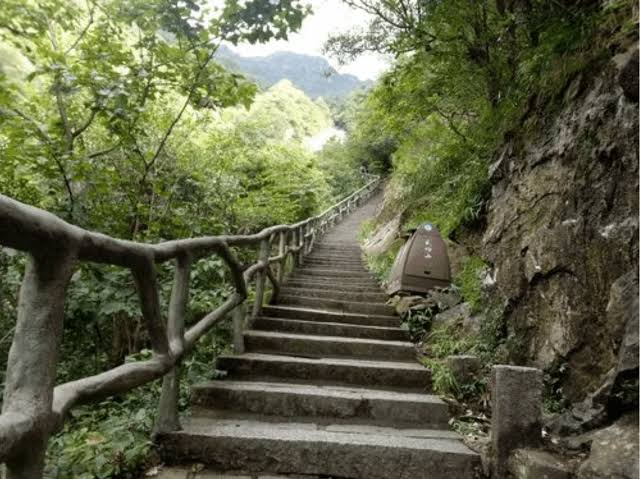

Lugares para descubrir

Cascadas de Intiray

Fortaleza del Cóndor

El Camino de los Ancestros
Propuestas culturales
Conocé tradiciones y leyendas, participá en actividades culturales y descubrí expresiones artísticas de la ciudad.
Actividades y eventos destacados
Disfrutá de caminatas por las montañas, recorridos por sitios arqueológicos y actividades que permiten conocer la historia y tradiciones de KALLAMARCA.